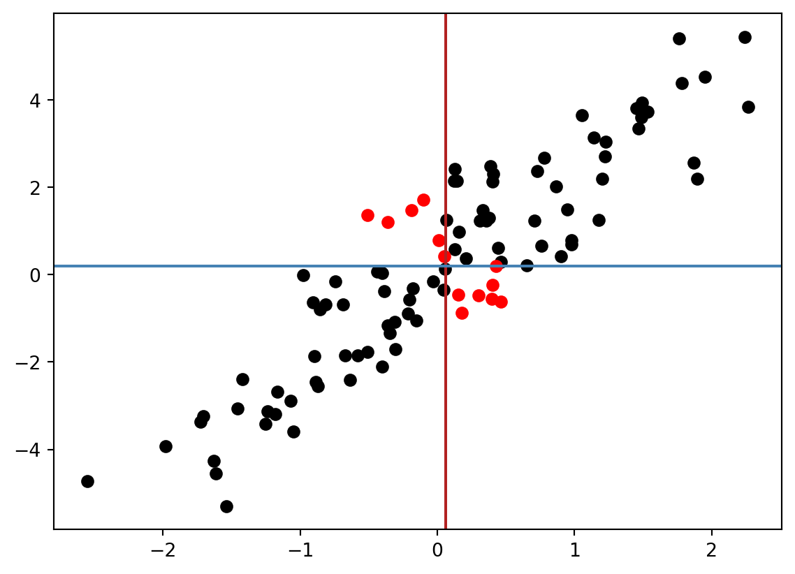

import matplotlib.pyplot as plt
import numpy as np
import pandas as pd
import seaborn as sns7 KQ-Methode
7.0.1 Beispiel: Bearbeitungszeit von Kundenrechnungen
Ein Buchhaltungsunternehmen möchte die Bearbeitungszeit von Kundenrechnungen besser verstehen und vorhersagen. Das Unternehmen hat uns Daten über die Anzahl der täglich bearbeiteten Rechnungen und die dafür benötigte Zeit zur Verfügung gestellt. Wir sollen nun eine Vorhersage für die Bearbeitungszeit treffen, wenn die Anzahl der Rechnungen bekannt ist.
df = pd.read_csv('https://raw.githubusercontent.com/febse/data/main/econ/invoices.txt', delimiter="\t")
df.head()| Day | Invoices | Time | |
|---|---|---|---|
| 0 | 1 | 149 | 2.1 |
| 1 | 2 | 60 | 1.8 |
| 2 | 3 | 188 | 2.3 |
| 3 | 4 | 23 | 0.8 |
| 4 | 5 | 201 | 2.7 |
Der Datensatz enthält die folgenden Variable (Spalten):
Day(numeric): Nummer des Tages, an dem die Rechnungen bearbeitet wurdenInvoices(numeric): Anzahl der bearbeiteten RechnungenTime(numeric): Zeit in Stunden, die für die Bearbeitung benötigt wurde
sns.scatterplot(data=df, x="Invoices", y="Time")# Naives Modell:
time_predicted1 = np.repeat(df['Time'].mean(), len(df))
res_1 = df['Time'] - time_predicted1
res_1.head()0 -0.01
1 -0.31
2 0.19
3 -1.31
4 0.59
Name: Time, dtype: float64# Ein Modell, das die Anzahl der Rechnungen berücksichtigt:
time_predicted2 = 0.5 + 0.01 * df['Invoices']
res_2 = df['Time'] - time_predicted2
res_2.head()0 0.11
1 0.70
2 -0.08
3 0.07
4 0.19
dtype: float64fig, ax = plt.subplots()
sns.scatterplot(data=df, x="Invoices", y="Time", ax=ax)
ax.hlines(y=time_predicted1.mean(), xmin=0, xmax=300, color='red', label='Mean')
ax.legend(loc=0)
ax.vlines(x=df["Invoices"], ymin=time_predicted1, ymax=df["Time"], color='red', alpha=0.2)
fig, ax = plt.subplots()
sns.scatterplot(data=df, x="Invoices", y="Time", ax=ax)
ax.plot(df["Invoices"], time_predicted2, '-', label='Modell 1')
ax.legend(loc=0)
ax.vlines(x=df["Invoices"], ymin=time_predicted2, ymax=df["Time"], color='red', alpha=0.2)
Welches Modell passt besser zu den Daten? Aus den graphischen Darstellungen können wir sehen, daß die Abweichungen zwischen den Prognosen (Modell) und den tatsächlichen Werten (Daten) beim zweiten Modell geringer sind. Es ist allerdings wichtig, die Modellgüte mit Hilfe von Kennzahlen zu bewerten.
Wir könnten z.B. die Summe der Abweichungen zwischen Prognosen und Beobachtungen berechnen.
\frac{1}{n}\sum_{i=1}^{n} (y_i - \hat{y}_i)
res_1.sum()2.886579864025407e-15res_2.sum()9.29Dieses scheint allerdings unsinnige Ergebnisse zu produzieren, denn die Prognosen des zweiten Modells offensichtlich näher an den Daten liegen. Die Summe der Abweichungen ist allerdings größer als beim ersten Modell. Das liegt daran, daß sich positive und negative Abweichungen in der Summe gegenseitig aufheben. Um das zu vermeiden, könnten wir die z.B. die Beträge der Abweichungen summieren
\sum_{i=1}^{n} |y_i - \hat{y}_i|
Es ist allerdings viel einfacher, die quadratischen Abweichungen zu summieren, denn die quadratische Funktion ist stetig differenzierbar und das ist mathematisch sehr bequem.
\text{RSS} = \sum_{i=1}^{n} (y_i - \hat{y}_i)^2
Um hervorzuheben, daß die Residuenquadratsumme von den Koeffizienten \hat{\beta}_0 und \hat{\beta}_1 abhängt, schreiben wir die Residuenquadratsumme als Funktion der Koeffizienten.
\text{RSS}(\hat{\beta}_0, \hat{\beta}_1) = \sum_{i=1}^{n} (y_i - (\hat{\beta}_0 + \hat{\beta}_1 x_i))^2
Lasst uns die Residuenquadratsumme für verschiedene Werte der Koeffizienten berechnen und die Ergebnisse graphisch darstellen. Wir werden die Residuenquadratsumme als Funktion der Koeffizienten in einem 3D-Diagramm darstellen.
exp_f = 2
bb0, bb1 = np.meshgrid(
np.linspace(0.6417 - 0.6417 * exp_f, 0.6417 + 0.6417 * exp_f, 100),
np.linspace(0.0113 - 0.0113 * exp_f, 0.0113 + 0.0113 * exp_f, 100)
)
# bb0, bb1 = np.meshgrid(
# np.linspace(-0.7 , 0.7, 100),
# np.linspace(-0.01, 0.01, 100)
# )
rss = np.zeros_like(bb0)
for i in range(bb0.shape[0]):
for j in range(bb0.shape[1]):
time_predicted = bb0[i, j] + bb1[i, j] * df['Invoices']
res = df['Time'] - time_predicted
rss[i, j] = np.sum(res**2)
fig = plt.figure()
ax = fig.add_subplot(111, projection='3d')
ax.plot_surface(bb0, bb1, rss, cmap='viridis')
ax.set_xlabel(r"$\hat{\beta}_0$")
ax.set_ylabel(r"$\hat{\beta}_1$")
ax.set_zlabel('RSS')Text(0.5, 0, 'RSS')
Bisher haben wir die Koeffizienten der Prognosegleichung manuell festgelegt. Es wäre jedoch besser, wenn wir die Koeffizienten automatisch so festlegen könnten, dass die Vorhersage möglichst genau ist. Dieses Ziel erreichen wir mit der Methode der kleinsten Quadrate.
\hat{y} = \hat{\beta}_0 + \hat{\beta}_1 \cdot x
Wir möchten die Koeffizienten \hat{\beta}_0 und \hat{\beta}_1 so bestimmen, dass die Summe der quadrierten Abweichungen zwischen den beobachteten und den vorhergesagten Werten minimal ist.
7.1 Modellschätzung
Es gibt mehrere Möglichkeiten, die Koeffizienten mit der KQ-Methode in Python zu bestimmen.
from sklearn.linear_model import LinearRegression
lm = LinearRegression()
lm.fit(df[['Invoices']], df['Time'])
lm.intercept_, lm.coef_(0.6417098798216139, array([0.01129164]))import statsmodels.formula.api as smf
model = smf.ols(formula='Time ~ Invoices', data=df).fit()
model.summary()| Dep. Variable: | Time | R-squared: | 0.872 |
| Model: | OLS | Adj. R-squared: | 0.867 |
| Method: | Least Squares | F-statistic: | 190.4 |
| Date: | Wed, 06 Mar 2024 | Prob (F-statistic): | 5.17e-14 |
| Time: | 16:05:15 | Log-Likelihood: | -8.2528 |
| No. Observations: | 30 | AIC: | 20.51 |
| Df Residuals: | 28 | BIC: | 23.31 |
| Df Model: | 1 | ||
| Covariance Type: | nonrobust |
| coef | std err | t | P>|t| | [0.025 | 0.975] | |
| Intercept | 0.6417 | 0.122 | 5.248 | 0.000 | 0.391 | 0.892 |
| Invoices | 0.0113 | 0.001 | 13.797 | 0.000 | 0.010 | 0.013 |
| Omnibus: | 2.815 | Durbin-Watson: | 1.760 |
| Prob(Omnibus): | 0.245 | Jarque-Bera (JB): | 1.341 |
| Skew: | -0.042 | Prob(JB): | 0.511 |
| Kurtosis: | 1.968 | Cond. No. | 303. |
Notes:
[1] Standard Errors assume that the covariance matrix of the errors is correctly specified.
7.2 Das Modell für die Daten
\begin{align} \text{Time}_i = \beta_0 + \beta_1 \cdot \text{Invoices}_i + e_i \\ e_i \sim N(0, \sigma^2) \end{align}
import pandas as pd
import numpy as np
import matplotlib.pyplot as plt
from scipy.stats import norm
# Define variables
x_breaks = np.array([50, 150, 250])
y_hat = 0.5 + 0.01 * x_breaks
# Create a DataFrame similar to expand_grid in R
dt = pd.DataFrame(np.array(np.meshgrid(np.arange(1, 2001), x_breaks)).T.reshape(-1,2), columns=['B', 'x'])
# Add mu, y, and dy columns
dt['mu'] = 0.5 + 0.01 * dt['x']
dt['y'] = np.random.normal(loc=dt['mu'], scale=0.33)
dt['dy'] = dt['x'] + 20 * norm.pdf(dt['y'], loc=dt['mu'], scale=0.33)
# Sort values
dt = dt.sort_values(['x', 'dy'])
# Plotting
plt.figure(figsize=(10, 6))
# Assuming 'invoices' is a DataFrame with 'Invoices' and 'Time' columns
# plt.scatter(invoices['Invoices'], invoices['Time'], alpha=0.5)
for x_val in dt['x'].unique():
dt_x = dt[dt['x'] == x_val]
plt.plot(dt_x['dy'], dt_x['y'], alpha=0.2, color='salmon')
plt.plot(dt['x'], dt['mu'], color='black')
plt.vlines(x_breaks, ymin=dt['y'].min(), ymax=dt['y'].max(), linestyles='dashed', alpha=0.5)
for x_val, y_val in zip(x_breaks, y_hat):
plt.text(x_val, y_val, r'$\mu = {}$'.format(round(y_val, 1)), va='top')
plt.xticks(x_breaks)
plt.yticks(0.5 + 0.01 * x_breaks)
plt.show()
7.3 Die einfache lineare Regression in Matrixform
Unsere Modellgleichung, die wir für die Vorhersage der Bearbeitungszeit verwenden, war:
\hat{\text{Time}} = \hat{\beta}_0 + \hat{\beta}_1 \text{Rechnungeen}
Nun wollen wir dieselbe Gleichung in Matrixform schreiben. Dazu schreiben wir diese Modellgleichung für alle Beobachtungen in unserem Datensatz auf:
\begin{align*} \hat{\text{Time}}_1 &= \hat{\beta}_0 + \hat{\beta}_1 \text{Rechnungeen}_1 \\ \hat{\text{Time}}_2 &= \hat{\beta}_0 + \hat{\beta}_1 \text{Rechnungeen}_2 \\ \hat{\text{Time}}_3 &= \hat{\beta}_0 + \hat{\beta}_1 \text{Rechnungeen}_3 \\ \vdots \\ \hat{\text{Time}}_n &= \hat{\beta}_0 + \hat{\beta}_1 \text{Rechnungeen}_n \\ \end{align*}
Nun laßt uns die obigen Gleichungen in Matrixform schreiben.
$$ \begin{bmatrix} \hat{\text{Time}}_1 \\ \hat{\text{Time}}_2 \\ \hat{\text{Time}}_3 \\ \vdots \\ \hat{\text{Time}}_n \\ \end{bmatrix} = \begin{bmatrix} 1 & \text{Rechnungeen}_1 \\ 1 & \text{Rechnungeen}_2 \\ 1 & \text{Rechnungeen}_3 \\ \vdots & \vdots \\ 1 & \text{Rechnungeen}_n \\ \end{bmatrix} \begin{bmatrix} \hat{\beta}_0 \\ \hat{\beta}_1 \\ \end{bmatrix}$$
7.4 Scenarios
Die Koeffizienten in Regressionsmodellen vergleichen verschiedene Szenarien. Es ist unsere Aufgabe, die Modelle so aufzustellen, dass wir sinnvolle Vergleiche anstellen können.
Insbesonderen in Modellen mit Interaktionseffekten ist es wichtig, die Variablen zu skalieren (XXX, w), um den Koeffizienten eine sinnvolle Interpretation zu geben.
7.5 Anmerkung
Die Variablen, die wir in den Modellen verwenden, nennen wir auch Prädiktoren
7.6 Interpretation
Es gibt zwei Interpretationen der Koeffizienten in Regressionsmodellen (XXX, check):
- Vorhersage: